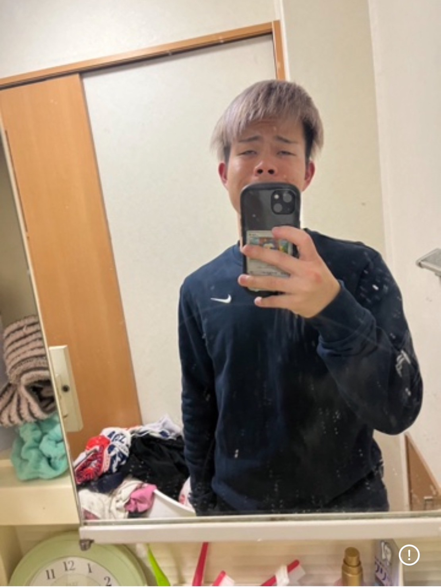
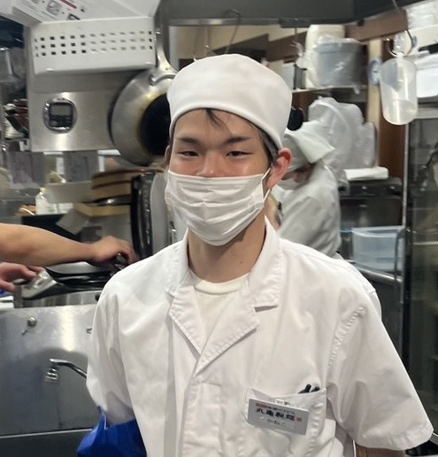
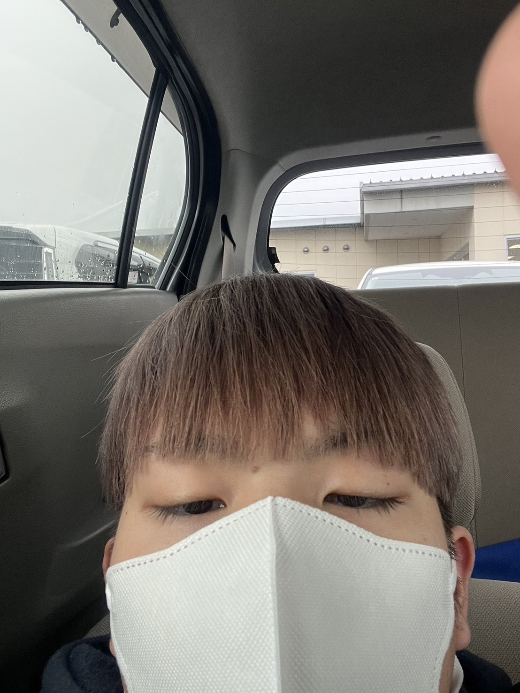
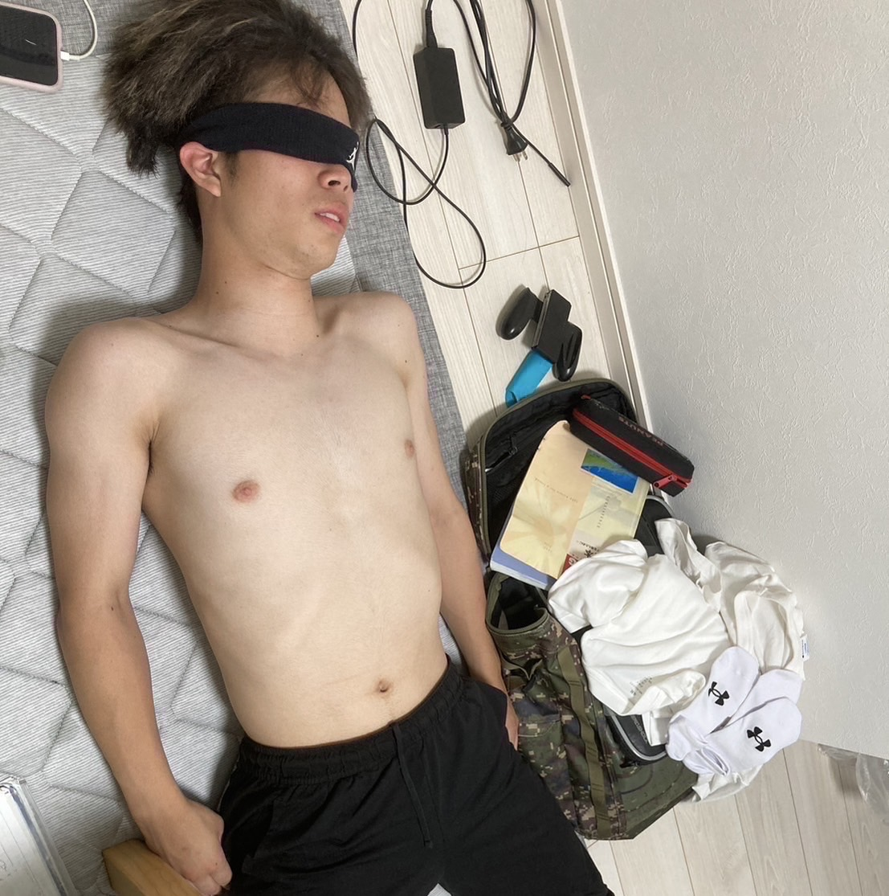

金子晃大
しがないプロパチンカer
性格
鬼のツンデレ
生粋のギャンブル精神
むっつり
生粋のギャンブル精神
むっつり
趣味
つり、パチンコ
ご当地風俗旅
公務員試験対策勉強
ご当地風俗旅
公務員試験対策勉強
仕事
うどん職人
一応学生
一応学生
特技
左打ち、ボッチ生活
イキ顔
イキ顔
収入
一月100ｋ
～親のすねかじり～
～親のすねかじり～
寿命
余命8年と840カ月
77日7分
7秒77
大当たりhu~~~~!!
77日7分
7秒77
大当たりhu~~~~!!
略歴
2003
大都会藤田に爆誕
2018
加藤学習塾 入塾
2022
E判定ながらも岡山大学に合格
2023
ギャンブルの世界へと足を踏み入れる
2025
プロパチンカerとして奮闘中
Skill
スキル説明
- 拳のごつさ： たぐいまれなるごつい拳を持つ。岩石を素手で破壊できる。
- 語彙力： 「きちー」「だりー」「こいつしゃばくね？」この3フレーズで普段生活している。
- 運転の荒さ： たびたび事故を起こし、車線も変更しまくるが不思議と安心感がある運転。
- 丸亀製麺への愛： 麺職人に並ぶほどの実力で、金子の作る冷たい明太釜玉うどんは丸亀一の人気メニュー
- 友達の人数： ノリ打ち仲間を含めて片手で収まる
多重人格カネコの人格紹介
金子 晃大
年齢： 22歳
性格： 主人格。一般大学生。生業はジャグラー。

金子さん
年齢： 30歳
性格： 丸亀パートナースタッフ。週六勤務。少ない手取りで家族を養う。
かねやん
年齢： 18歳
性格： ポケカマスター。転売目的で始めたポケカが今では欠かせない趣味。

こうくん
年齢： ８歳
性格： まだまだ遊び盛りのクソガキ。下ネタが大好物。

カネコ氏
年齢： 42歳
性格： 風俗狂いの中年男性。目隠しプレイが大好き。性感帯は右乳首

Mr.k-k
年齢： 28歳
性格： 那須川天心の最大のライバル。ラップも嗜む。十八番は純恋歌。